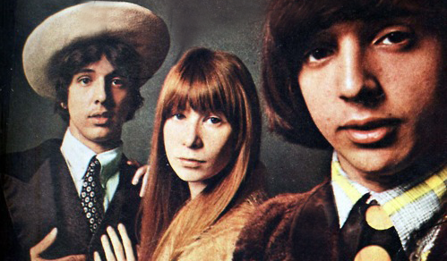
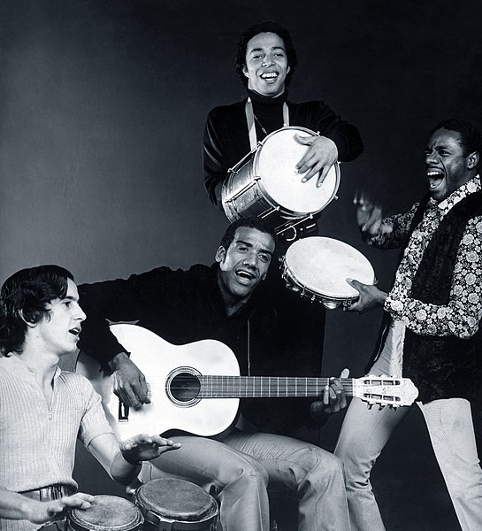
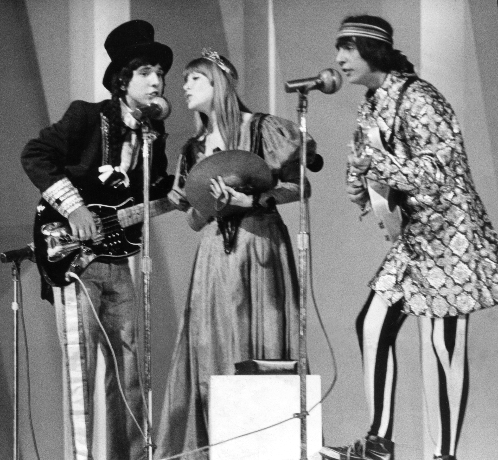

Boas-vindas a
 Quero conhecer!
Quero conhecer!


O que foi a Tropicália
A Tropicália, foi um movimento cultural brasileiro, que ocorreu entre 1968 e 1969. O movimento buscava renovar o cenário cultural do Brasil por influências do rock, pop e de elementos da cultura brasileira. Seus represetantes denunciavam a realidade da ditadura militar e usaram de alegorias para fugir da censura. Encerrou-se com a prisão de Caetano Veloso e o exílio de Gilberto Gil principais representantes do movimento.
Galeria
